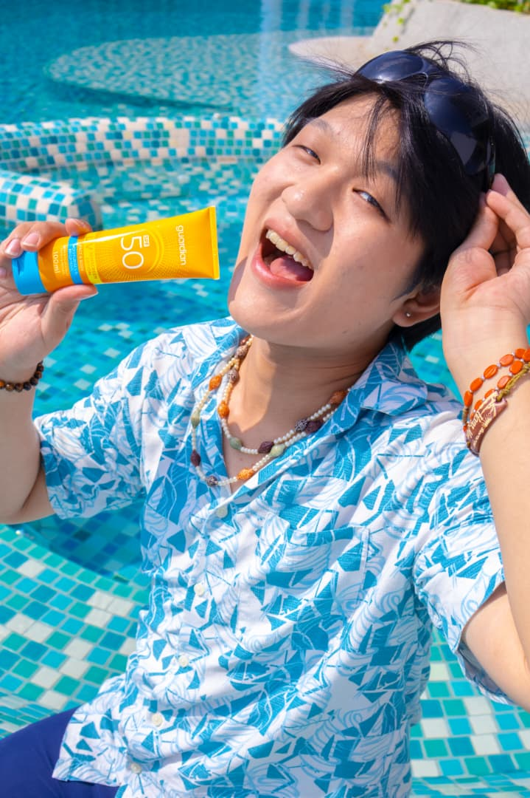

Then Hang Seen is a digital media student with a passion for motion graphics and animation. He is currently pursuing his degree in Digital Media at Dasein Academy of Art and has a strong interest in creating engaging visual content.
His visual style is characterized by vibrant and bold colours, as well as a playful and whimsical approach to design. He enjoys experimenting with different techniques and styles to create unique and eye-catching visuals, such as including experimental ways of animations and transitions like using real photographs and collage-like techniques for his projects. He hopes that one day he can work with his favourite brands like Louis Vuitton, Chanel, Versace, as well as Gentle Monster to produce beautiful visual content for their fashion campaigns.
